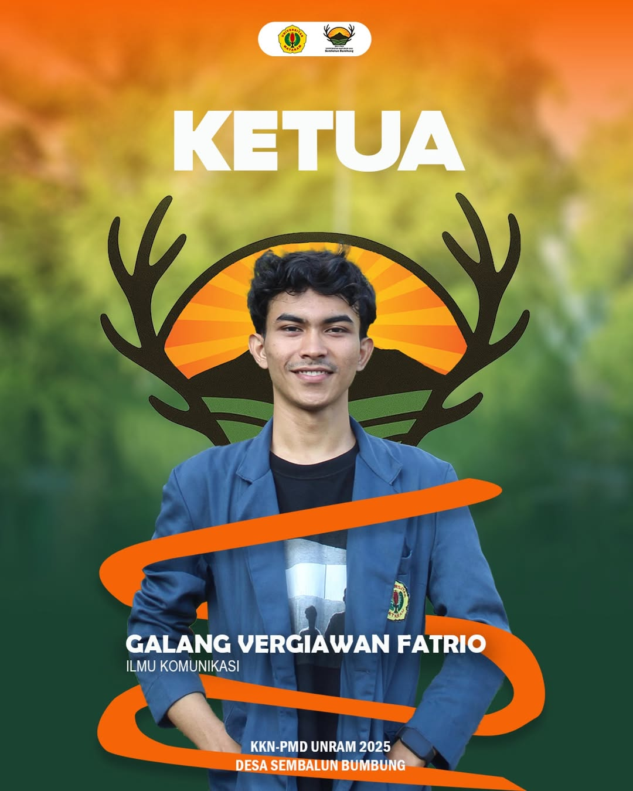

WebGIS Sebaran Potensi Wisata dan UMKM
WebGIS ini menampilkan informasi spasial terkait potensi wisata dan UMKM di Desa Sembalun Bumbung, Kecamatan Sembalun, Kabupaten Lombok Timur. Data ini disusun oleh Tim KKN-PMD UNRAM 2025.
Meet Our Team - Bumbung Beraksi

×